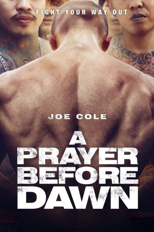

#10836 A Prayer before Dawn - Das letzte Gebet
Alternativ: A Prayer Before Dawn (Englischer Titel)
 gesehen am 13.04.2019
gesehen am 13.04.2019
 
 IMDB-Wertung: 6.9 / 10
IMDB-Wertung: 6.9 / 10  Metascore: 76
Metascore: 76 
Billy Moore (Joe Cole) saß über zwei Jahre in einem der brutalsten und gefährlichsten Gefängnisse der Welt, dem thailändischen Klong Prem, auch Bangkok Hilton genannt. Dort musste er Morde und Gewalt mit ansehen, die sogar seine Vorstellungskraft übertrafen, obwohl er selbst kein Waisenknabe war und auch vorher schon mehrere Male im Knast saß. Um zu überleben fing der Mann, der als Kind schon geboxt hatte, damit an Muay-Thai-Boxen zu erlernen.
Jahr: 2017
Dauer: 116 Minuten
FSK: 16
Land: England Studio: Koryphäen FilmTonspuren: DTS - ,
Untertitel: Deutsch,
Auflösung: 1080p (1920x808) Größe: 8990 MB
Genre: Action, Drama, Krimi, Sport, Biographie
Regisseur: Jean-Stéphane Sauvaire
Drehbuch: Jonathan Hirschbein, Nick Saltrese
Soundtrack: Nicolas Becker
Darsteller:
 Joe Cole als Billy Moore
Joe Cole als Billy Moore Vithaya Pansringarm als Officer Preecha
Vithaya Pansringarm als Officer Preecha- Panya Yimmumphai als Keng
- Nicolas Shake als Doctor
- Pornchanok Mabklang als Fame
- Billy Moore als Billy Moore's Father
- Rex Basbas als Lady Boy
- Sonephet Inthisome als Tiffany
- Russel Galupo als Lady Boy
- Nichakran Nabumrung als Gogo Girl
- Somlock Kamsing als Trainer
- Sakda Niamhom als Saiyok
- Chaloemporn Sawatsuk als M
- Sura Sirmalai als Chanachol
- Patsapon Kaysornmaleethanachok als Yieow Dang
- Komsan Polsan als Patumsuk
- Isoon Poungnak als Noi
- Somsak Noichalad als Trustee
- Oakkharakittikhachok Chokwatcharakonkun als Bowie
- Anirut Poklin als Toon
- Peerawat Teerapabjaroen als Trustee
- Sadja Yuekyenpaiboon als Ta
- Piyawat Meerum als Muslim
- Atsadawut Nuchit als Ae
- Yingyut Audomrit als Bird
- Paradorn Areepak als Boy
- Pairoj Kasankun als Guard
- Siriwej Jaroenchom als Police Officer
- Jessie Castanares als Police Officer
- Praphon Suwannakhot als Ton
- Clark Castanares als Son of Lek
- Narong Siri als Papa
- Sarawut Sae Han als Joke
- Arpisit Chomjit als Art
- Precha Wathanamongkhon als Tom
- Aunnob Khamchoei als Indian God Power
- Ardune Nudchanard als Guard
- Cheewin Boonyasuwan als Trustee
- Tanipol Kamjun als Lek
- Wisanu Kholekklang als Trustee
- Praphan Ploysuwan als Bum
- Vachayan Khamon als Tiger
- Chalit Panyudod als Tan
- Nopparut Archeeva als Sombut
- Tanithipong Pakkapantharud als Muslim
- Anucha Sriyaem als Kluay
- Paniwat Paroon als Muslim
- Pongrapee Rodmanee als Trustee
- Wiroj Lertwitworawat als Police Officer
- Sarawut Rungchareantoom als Guard
Datei: X:\2017(N-Z)\Prayer before Dawn - Das letzte Gebet, A (2017, FSK16, 1920x808).mkv seit 10.03.2019
Festplatte: HD 2017(A-Z)-2018(A-F)
 Es gibt insgesamt 170 Filme in der Gruppe '2017(N-Z)'
Es gibt insgesamt 170 Filme in der Gruppe '2017(N-Z)'